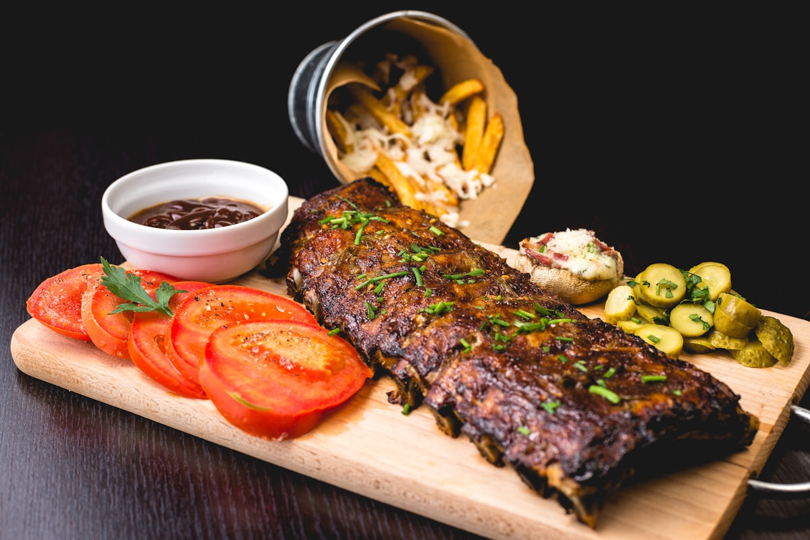

The Science of the Maillard Reaction: Protein Pyrolysis, Flavor Compounds, and Searing Mechanics

The golden-brown, deeply aromatic crust formed on a perfectly seared steak, roasted root vegetable, or toasted crust of artisanal bread is universally recognized as the hallmark of culinary excellence. Yet, behind this intoxicating aroma and savory complexity lies one of the most intricate organic chemical cascades in food physics: the Maillard reaction. Discovered by French physician Louis-Camille Maillard in 1912, this non-enzymatic browning network transforms simple amino acids and reducing sugars into hundreds of volatile flavor molecules that define gourmet dinner centerpieces.
The Critical 280°F – 330°F (140°C – 165°C) Thermal Window
The Maillard reaction begins sluggishly at 200°F but accelerates exponentially between 280°F and 330°F. Above 355°F (180°C), simple sugar caramelization takes over, and exceeding 400°F (204°C) causes true protein pyrolysis (charring), producing acrid bitter compounds and heterocyclic amines.
1. Molecular Cascade: From Glycosylamine to Melanoidin Polymers
Unlike simple caramelization—which is the thermal decomposition of pure sucrose or glucose without nitrogen—the Maillard cascade requires two distinct biochemical precursors: a free amino acid (typically lysine, cysteine, or proline) and a reducing sugar possessing an open carbonyl group (such as glucose, fructose, or ribose).
The reaction unfolds across three continuous kinetic stages:
- Early Phase (Condensation & Amadori Rearrangement): The nucleophilic amino group attacks the electrophilic carbonyl carbon of the reducing sugar, expelling a molecule of water to form an unstable N-substituted glycosylamine. This molecule undergoes an irreversible Amadori rearrangement (or Heyns rearrangement for ketoses) to produce stable 1-amino-1-deoxy-2-ketose intermediates.
- Intermediate Phase (Dehydration & Fragmentation): The Amadori compounds undergo enolization, dicarbonyl cleavage, and Strecker degradation. Here, alpha-amino acids are decarboxylated and oxidized into key volatile aldehydes.
- Final Phase (Polymerization & Aroma Synthesis): Highly reactive dicarbonyls and Strecker aldehydes condense with remaining amines, polymerizing into high-molecular-weight brown pigments called melanoidins and generating hundreds of heterocyclic volatile aroma compounds.
 Figure 1.1: Radiant cast iron heat transfer drives rapid moisture vaporization, enabling instantaneous Maillard crust formation.
Figure 1.1: Radiant cast iron heat transfer drives rapid moisture vaporization, enabling instantaneous Maillard crust formation.
2. Volatile Flavor Chemistry: The Spectrum of Searing Aromas
The sensory delight of seared proteins stems from the astonishing variety of volatile heterocyclic ring structures synthesized during the final Maillard phase. Different amino acid precursors yield distinct aromatic profiles:
| Heterocyclic Compound Class | Precursor Amino Acids | Sensory Aroma Character | Culinary Expression |
|---|---|---|---|
| Pyrazines & Alkylpyrazines | Lysine + Glucose | Nutty, roasted, toasted grain, earthy | Dark steak crust, roasted coffee notes |
| Thiophenes & Thiazoles | Cysteine + Methionine | Meaty, savory, rich broth, savory umami | Roasted pan drippings, beef reduction |
| Furans & Furanones | Proline + Sucrose | Sweet, caramel-like, malty, toasted butter | Brown butter basting, glazed parsnips |
| Pyrroles & Pyridines | Alanine + Glycine | Warm biscuit, roasted corn, smoky | Artisanal bread crust, seared crust edge |
3. The Moisture Barrier: Thermodynamic Latent Heat of Evaporation
The single greatest obstacle to achieving a crisp, golden Maillard crust is liquid water on the food surface. Under normal atmospheric pressure, liquid water cannot exceed 212°F (100°C) in a pan because any added thermal energy is consumed by the enormous latent heat of vaporization (2,260 Joules per gram of water).
If a wet steak or mushroom is placed in a hot skillet, the surface temperature remains locked at 212°F until every microscopic droplet of surface water boils off. During this time, the food steams rather than sears, turning grey, rubbery, and soggy.
To overcome this physical barrier, professional chefs apply the Dry-Brining & Surface Desiccation Protocol:
- Salt Osmosis & Reabsorption: Applying kosher salt (1% to 1.5% of meat weight) 12 to 24 hours before cooking draws intracellular water to the surface via osmosis. The salt dissolves into a concentrated brine, which slowly diffuses back into the deep muscle fibers, denaturing myosin proteins to lock in moisture during cooking.
- Uncovered Chilled Convection: Placing the salted protein on an elevated wire rack in a modern frost-free refrigerator exposes it to cold, dry circulating air. Within 12 hours, the outer epidermal layer forms a dry, tacky sheen (pellicle) with near-zero surface moisture.
- Instantaneous Crust Genesis: When this desiccated surface contacts the hot cooking surface, Maillard reactions begin within five seconds, creating a razor-thin, glass-crisp crust without overcooking the interior meat.
 Figure 1.2: Deglazing caramelized pan fond with aromatic botanical reduction captures insoluble Maillard flavor compounds.
Figure 1.2: Deglazing caramelized pan fond with aromatic botanical reduction captures insoluble Maillard flavor compounds.
4. Pan Metallurgy: Cast Iron vs. Stainless Clad Thermal Mass
The choice of cookware metallurgy governs the thermal recovery velocity of the cooking vessel. When a 300-gram chilled steak touches a pan, it immediately extracts thermal energy, causing the pan surface temperature to plummet.
Heavy Seasoned Cast Iron: Cast iron has relatively low thermal conductivity (k ≈ 52 W/m·K) but immense volumetric heat capacity. A heavy 12-inch cast iron skillet holds a tremendous reservoir of stored thermal energy, absorbing the cold shock of the meat and maintaining temperatures well above 300°F to sustain continuous searing.
Multi-Ply Stainless / Aluminum Clad: Tri-ply stainless pans conduct heat quickly and evenly across the base, making them the superior choice for delicate pan sauces where precise, instantaneous heat modulation is needed to prevent burning delicate aromatics.
5. The Lipid Phase: Butter-Basting as an Aromatic Solvent
In the classical French arroser technique, chefs add cold cultured butter, crushed garlic, and fresh woody herbs (thyme, rosemary) to the pan during the final two minutes of searing.
This step serves three vital chemical functions:
- Lipid-Soluble Extraction: Many Maillard aroma compounds and herb essential oils (such as thymol and carvacrol) are hydrophobic. Hot butter fat acts as an organic solvent, dissolving and redistributing these aroma molecules across the entire crust.
- Milk Solid Caramelization: The milk proteins and lactose in the butter foam and brown at 260°F, depositing golden nutty milk solids into the microscopic crevices of the protein surface.
- Convective Heat Wrap: Continuous spooning of hot foaming butter over the upper surface cooks the exterior evenly without requiring excessive pan flipping.
6. Resting Dynamics: Hydraulic Equilibrium and Moisture Retention
Cutting into a freshly seared steak immediately off the heat results in a flood of flavorful myoglobin-rich juices across the cutting board. During intense heating, muscle fibers contract violently, squeezing intracellular fluid toward the cooler center of the cut where internal hydraulic pressure spikes.
Resting the meat on a warm wooden board for 8 to 10 minutes allows core temperatures to equalize. As muscle proteins relax, their water-binding capacity increases, allowing the gelatinous juices to thicken and redistribute evenly throughout the fiber matrix. When sliced, the juices remain locked within each bite.
7. Deglazing Kinetics: Capturing Insoluble Melanoidins
During searing, small fragments of protein, carbohydrates, and rendered fats adhere to the bottom of the pan, forming a caramelized layer known as the fond. These caramelized particles contain hundreds of non-volatile Maillard polymers and savory glutamates that are insoluble in pure fats.
To liberate these trapped flavor treasures, the chef performs deglazing: pouring an aqueous acidic liquid (such as verjus, botanical broth, or aged fruit vinegar) into the hot pan while scraping vigorously with a wooden spatula. The thermal shock and steam instantly dissolve the fond, hydrolyzing the complex polymers into a glossy, velvety reduction that forms the foundation of elevated dinner saucing.
8. Frequently Asked Questions on Searing & Maillard Chemistry
Is the Maillard reaction the same thing as caramelization?
No. Caramelization involves only pure carbohydrates heated to high temperatures (above 320°F), whereas the Maillard reaction requires both amino acids (proteins) and reducing sugars, producing complex savory, roasted, and meaty notes at lower temperatures.
Why should meat be brought to room temperature before searing?
Allowing meat to sit at ambient kitchen temperature for 30 to 45 minutes reduces the thermal gradient between the exterior and interior, allowing a deep golden crust to form without overcooking the outer core into a gray ring.
Can vegetables undergo Maillard browning?
Yes. Vegetables containing natural amino acids and sugars (such as onions, parsnips, Brussels sprouts, and roasted mushrooms) develop intense savory flavors through Maillard browning when roasted in high heat.
What oil is best for high-heat pan searing?
Neutral oils with high smoke points (such as refined avocado oil, rice bran oil, or clarified butter/ghee with smoke points exceeding 450°F) are ideal for preventing acrid thermal breakdown during the initial searing phase.
Key Scientific Takeaways
- The Maillard cascade synthesizes hundreds of aromatic pyrazines, thiazoles, and furans from amino acids and sugars.
- Surface moisture is the primary enemy of searing; dry-brining and cold-air refrigeration eliminate latent heat delays.
- Heavy cast iron provides the volumetric thermal mass necessary to prevent sudden pan cooling upon protein contact.
- Post-sear resting allows muscle fibers to relax and reabsorb intracellular juices under stabilized hydraulic pressure.